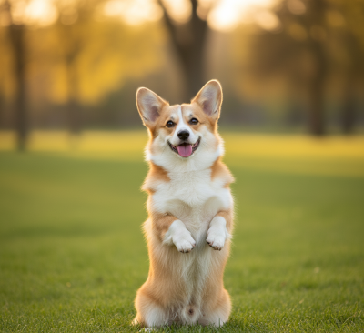
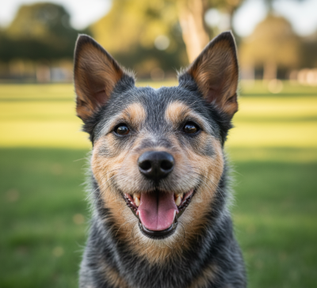

O Nas - Pielęgnacja z Serca w „Piesanie”
Witamy w „Piesanie”, miejscu stworzonym z bezwarunkowej miłości do zwierząt. Choć drzwi naszego salonu otworzyliśmy w 2025 roku, nasze doświadczenie i pasja do pielęgnacji psów sięgają znacznie dalej. Naszą misją jest zapewnienie każdemu czworonożnemu gościowi nie tylko pięknej fryzury, ale przede wszystkim spokoju i komfortu. W „Piesanie” strzyżenie, kąpiel i trymowanie to nie tylko zabiegi - to chwila relaksu, prowadzona w oparciu o cierpliwość i pozytywne wzmacnianie.

Wierzymy, że to, czego używamy do pielęgnacji, ma kluczowe znaczenie. Dlatego jesteśmy dumni z naszych własnych, autorskich linii szamponów i odżywek ziołowych. Te naturalne, starannie skomponowane kosmetyki są wolne od ostrych chemikaliów i stworzone z myślą o wrażliwej skórze i sierści psów. Dzięki nim pielęgnacja jest skuteczna, a jednocześnie w pełni bezpieczna i delikatna.

Nasza troska wykracza poza mury salonu. Angażujemy się aktywnie w pomoc potrzebującym zwierzakom, wspierając lokalne schronisko w Kudybach Dolnych. Regularnie oferujemy tam darmowe, okresowe prysznice i zabiegi odpchlania dla podopiecznych. W ten sposób dajemy zwierzętom drugą szansę na lepszy start i pokazujemy, że pielęgnacja to element dbania o ich zdrowie i godność.

Wybierając „Piesanie”, wybierasz profesjonalizm, naturalne kosmetyki i salon, dla którego dobro psa jest prawdziwym priorytetem.